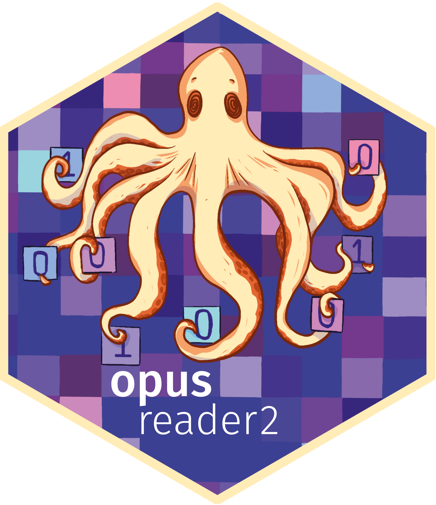

🪄 Scope
“grab ’em all” — Read OPUS binary files from Fourier-Transform Infrared (FT-IR) spectrometers of the company Bruker Optics GmbH & Co. in R. This package is being developed in our free time we have at spectral-cockpit.space. And by the way, 8 arms stand for 8 bits or oct*.

🪩 Highlights and disclaimer
The Bruker corporation produces reliable instruments; however, there is no official documentation for the OPUS file format, making it proprietary. Fortunately, our team and colleagues from the open-source spectroscopy community have successfully deciphered it. With considerable effort, we’ve unraveled the file logic (see credits).
{opusreader2} stands as a state-of-the-art binary reader, serving as a robust foundation for your spectroscopy workflow. Notably modular, it imposes no hard dependencies beyond base R. Actively contributing to the spectroscopy communities is encouraged through feedback, issue reports, and pull requests. These collective efforts aim to enhance support for a growing array of instruments, measurement modes, and block types. Additionally, be on the lookout for our forthcoming diagnostic solutions built upon {opusreader2}. For those seeking personalized assistance, Spectral-Cockpit offers consulting services tailored to every stage of your spectroscopy workflow.
We have now achieved stability in package development. The core API of opusreader2::read_opus() is robust, and we do not anticipate any significant user-facing design changes. Moving forward, additional functions downstream will extend the capabilities, allowing users to extract specific areas of interest, such as measurement metadata, or to facilitate reading workflows for custom environments.
Our current development efforts are
- expanding support for Bruker data blocks even further
- providing useful downstream features for metadata and spectra management through additional helper and wrapper functions.
We have adopted semantic versioning with {fledge} to track changes. To stay updated on the progress and history of features aligned with semantic versioning, please refer to the NEWS. Our aim is to soon release a stable version on CRAN that is production-ready. The expected time of arrival is January 2024.
📦 Installation
The latest version can be installed
directly via R-universe [expand]
# Install the latest version
install.packages("opusreader2", repos = c(
spectralcockpit = 'https://spectral-cockpit.r-universe.dev',
CRAN = 'https://cloud.r-project.org'))from GitHub via {remotes} [expand]
if (!require("remotes")) install.packages("remotes")
remotes::install_github("spectral-cockpit/opusreader2")🔦 Examples
We recommend to start with the vignette “Reading OPUS binary files from Bruker® spectrometers in R”.
library("opusreader2")
# read a single file (one measurement)
file <- opus_file()
data_list <- read_opus(dsn = file)Reading files in parallel [expand]
Multiple OPUS files can optionally be read in parallel using the {future} framework. For this, parallel workers need to be registered.
file <- opus_file()
files_1000 <- rep(file, 1000L)
if (!require("future")) install.packages("future")
if (!require("future.apply")) install.packages("future.apply")
# register parallel backend (multisession; using sockets)
future::plan(future::multisession)
data <- read_opus(dsn = files_1000, parallel = TRUE)Reading files in parallel with progress updates [expand]
If parallel = TRUE, progress updates via {progressr} are optionally available
if (!require("progressr")) install.packages("progressr")
library("progressr")
future::plan(future::multisession)
handlers(global = TRUE)
handlers("progress") # base R progress animation
file <- opus_file()
files_1000 <- rep(file, 1000L)
# read with progress bar
data <- read_opus(dsn = files_1000, parallel = TRUE, progress_bar = TRUE)Optionally, the number of desired chunks can be specified via options.
Read a single OPUS file [expand]
data <- read_opus_single(dsn = file)Advanced testing and Bruker OPUS file specification
We strive to have a full-fledged reader of OPUS files that is on par with the commercial reader in the Bruker OPUS software suite.
To contribute to the development, we will provide an additional vignette that describes the OPUS format and the technical details of our implementation in the package.
How to contribute
We like the spirit of open source development, so any constructive suggestions or questions are always welcome. To trade off the consistency and quality of code with the drive for innovation, we are following some best practices (which can be indeed improved, as many other things in life). These are:
-
Code checks (linting), styling, and spell checking: We use the pre-commit framework with both some generic coding and R specific hooks configured in
.pre-commit-config.yaml. Generally, we follow the tidyverse style guide, with slight exceptions. To provide auto-fixing in PRs where possible, we rely on pre-commit.ci lite.
Install and enable pre-commit hooks locally (details)
- install pre-commit with python3. For more details and options, see the official documentation
- enable the pre-commit hooks in
.pre-commit-config.yaml
Once you do a git commit -m "<your-commit-message>", the defined pre-commit hooks will automatically be applied on new commits.
Organizations and projects using {opusreader2}
As far as we know, the following organizations and projects use our package. Please make a pull request if you want to be listed here.
- CSIRO
- Open Soil Spectral Library
- ETH Zürich: Sustainable Agroecosystems group and Soil Resources group
Background
This package is a major rework of {opusreader} made by Pierre Roudier and Philipp Baumann. {opusreader} works, but not for all OPUS files. This precessor package relies on an interesting but not optimal reverse engineered logic. Particularly, the assignment of spectral data types (i.e., single channel reflectance vs. final result spectrum), was buggy because the CO2 peak ratio was used as a heuristic. Also, byte offsets from three letter strings were directly used to read specific data and assign block types. This is not 100% robust and causes some read failures in edge cases.
The new package parses the file header for assigning spectral blocks.
Credits
- Pierre Roudier and Philipp Baumann made an improved R reader, further developing the version in simplerspec by Philipp. https://github.com/pierreroudier/opusreader
- QED.ai: implemented a python parser which takes the main the logic of ono. https://github.com/qedsoftware/brukeropusreader
- twagner: wrote a OPUS FTIR clone called ono. Original decrypter of the header. https://pypi.org/project/ono/
- Andrew Sila and Tomislav Hengl: wrote a first OPUS reader in R. https://github.com/cran/soil.spec/blob/master/R/read.opus.R